WWDC 2020: Design and build for the iPadOS pointer
Find hereafter a detailed summary of the above named video which belongs to a taxonomy of some WWDC footages.
The original videos are available on the Apple official website (session 10640 and session 10093).
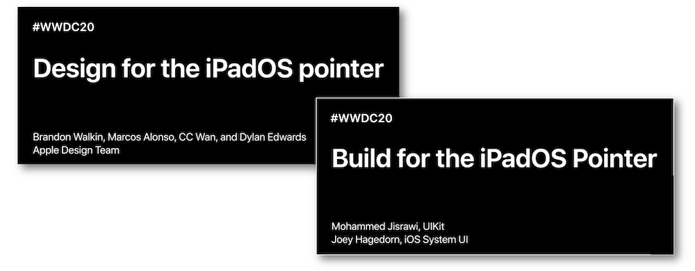
"Bring the power of the pointer to your iPad app: We'll show you how Apple's design team approached designing the iPadOS pointer to complement touch input, and how you can customize and refine pointer interactions in your app to make workflows more efficient and gratifying. Discover how the pointer's adaptive precision enables people to quickly and confidently target interface elements regardless of their size. We'll also share some best practices on adapting the pointer to complement your app's unique needs including how to select pointer effects and design pointer shapes, integrate trackpad gestures, and keyboard modifiers."
"[...] add customizations to the pointer on iPad using pointer interaction APIs, create pointer effects for your buttons and custom views, and change the pointer shape in specific areas of your app to highlight them."
Most of the illustrations are parts of the Apple presentations and may be available at the Resources section inside the Overview sheet of each video.
Hereafter, the underlined elements lead directly to the playback of the WWDC video at the appropriate moment.
Design #
The main reason why the pointer was added as an iPad support in iOS 13.4 mainly relies on ergonomics while combining its high precision with a touch-based interface.
Precision #
When using the iPadOS pointer, the required dexterity may lead to an unwanted action...
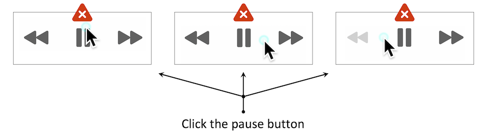
... that may be fixed through the concept of this adaptive precision.
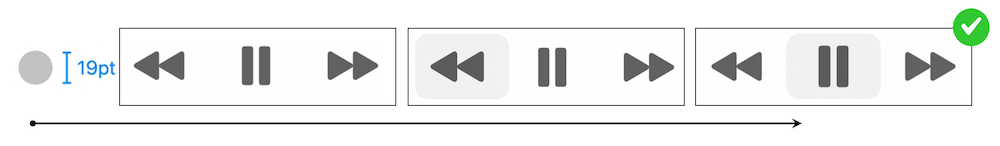
The rationale behind this notion is based on the emphasis of the graphic element via an underlying layout.
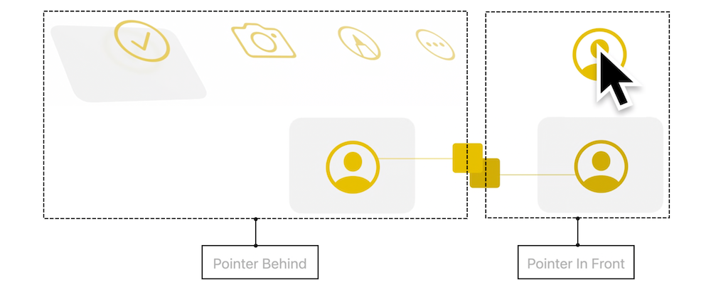
Using the standard UIKit elements (including text) leads to a transparent implementation of the adaptive precision.
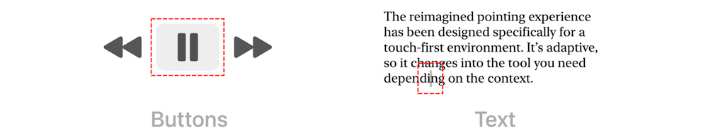
Operating mode #
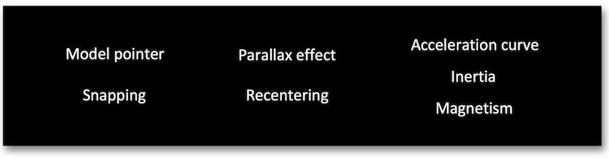
The pointer is actually composed of two elements: a visible true pointer and an invisible model pointer that handles the items hovering.
When the true pointer is heading to an interactive element and reaches its hit area edge, the model pointer highlights the element through a dedicated animation called snapping.
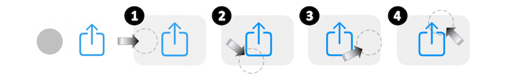
A pointer movement inside the hit area edges is indicated via a parallax effect that ends up when the finger raises up from the trackpad for instance.
In this case, the true pointer automatically leads to the center of the selected element thanks to the recentering control.
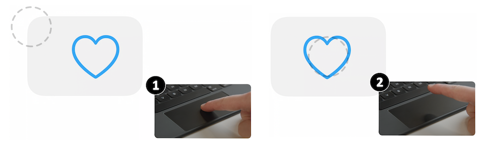
Besides the simultaneous use of the pointer and touch, a connection between the pointer speed and the covered distance is generated under the name of acceleration curve.
This movement efficiency is also improved by two pointer capabilities: inertia and magnetism that aim at easing the pointer handling through a smooth and intelligent way for finishing its path after the finger lifts the trackpad.
Note that any control that supports pointer snapping gets magnetism for free.
Pointer effects #
Three pointer effects are available to bring focus to the interactive elements.
Used for small controls with no background.
Used for medium sized elements with a background.
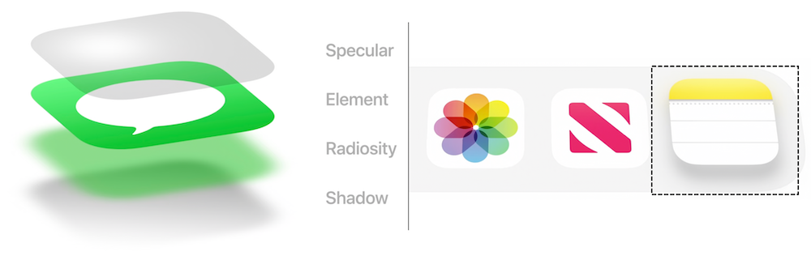
Besides its goal of highlighting, the specular light also shows the movement of the true pointer behind the graphic element.
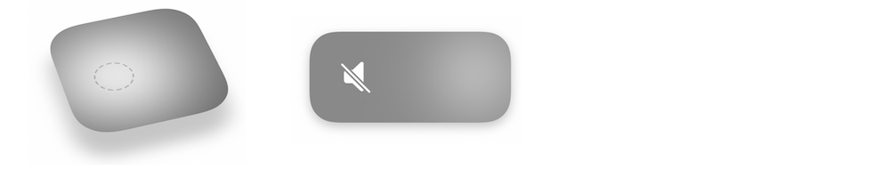
Tips & tricks #
The main rule to be followed when implementing a pointer effect is the Automatic Effect that handles the best effect for an element according to its size and shape.
Some quick examples are highlighted for helping the design implementation...
Adapt the area around an element for getting the most efficient activation of the pointer effect.
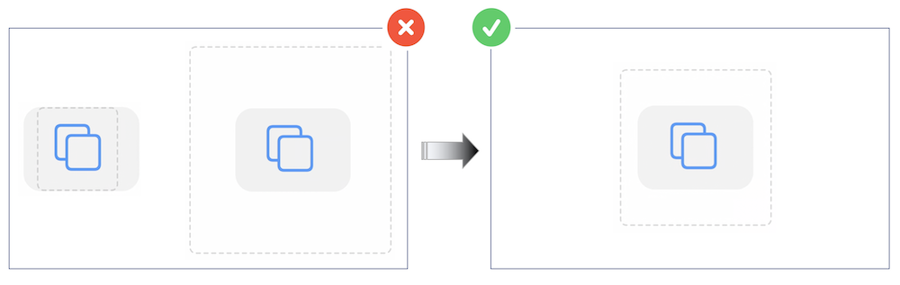
Adapt the Lift effect with the potential shadow of the selected element to avoid unwanted cut out.
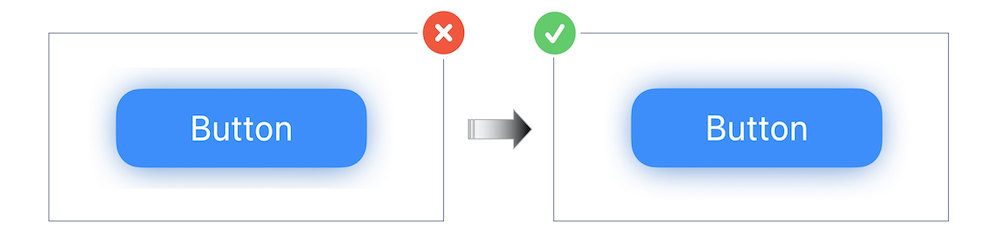
... with an interesting suggestion regarding the recommended space around a graphic element.
Customize & combine #
With the Highlight and Lift effects, it's crucial to adapt the corner radius of the graphic elements to reach a perfect rendering.
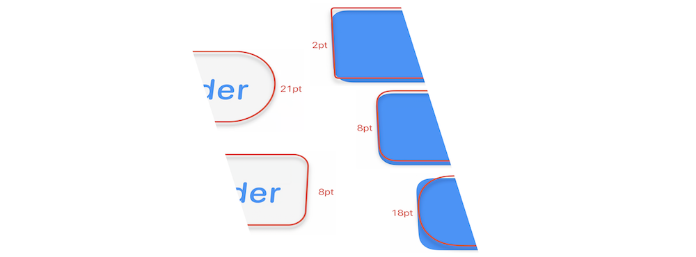
Various options should be checked regarding the Hover effect:

Pointer appearance #
Material & shape #
The pointer material automatically adapts its colors for a better user experience.
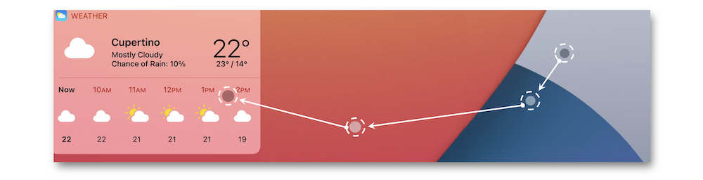
This material may join the initial shape for a modification in order to catch the attention.
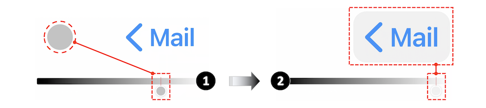
The pointer shape may transform from a circle to a bunch of rounded rectangles...
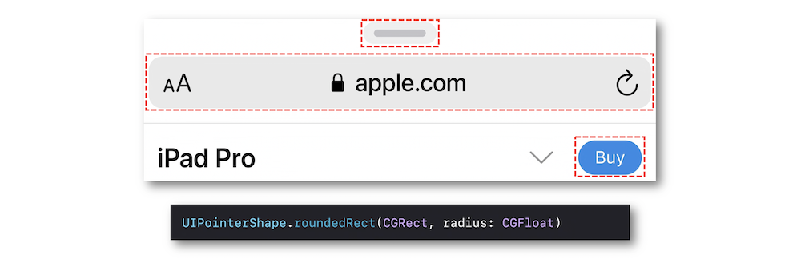
... or morph into any arbitrary shape whose goal is to show up a different functionnality.
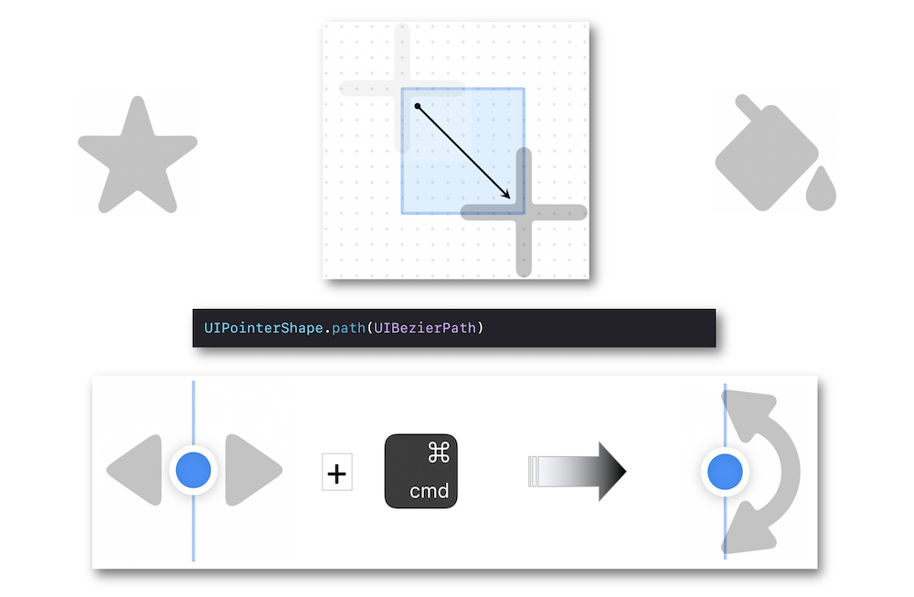
Custom pointer #
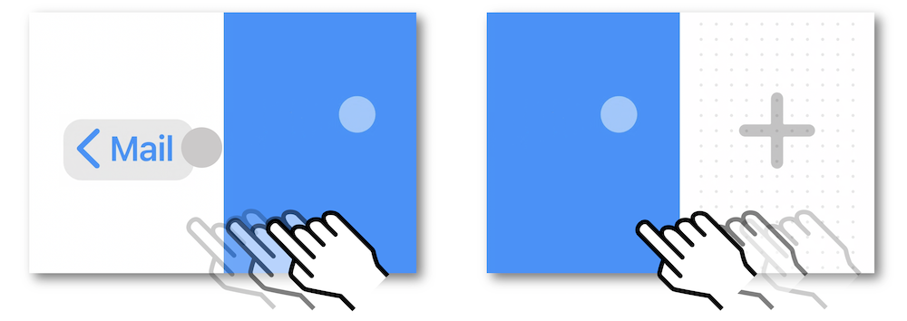
To create a custom pointer, few rules are necessary to be followed:
The custom shape must be simple and easy to understand.
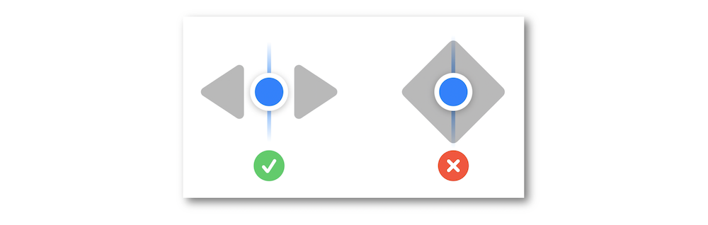
It's recommended the custom shape size and the default size be as close as possible in order to keep a visual consistency.
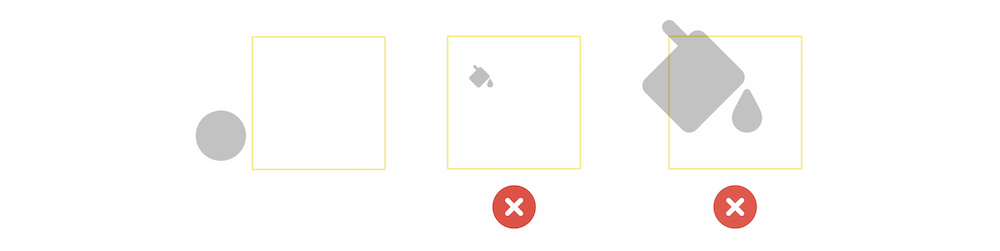
Should a greater size be inserted, the difference may be acceptable with a different stroke weight.
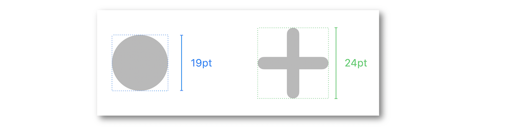
The shape and the functionnality of the pointer must be tightly connected so as to be as clearly understood as possible.
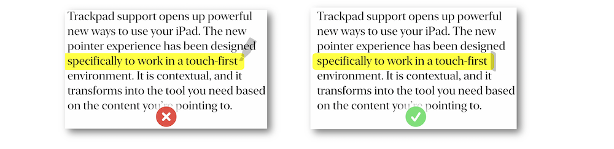
In most cases, the point of interaction should be at the center of the designed shapes apart from certain special configurations for which the anchor point location could depend on the context.
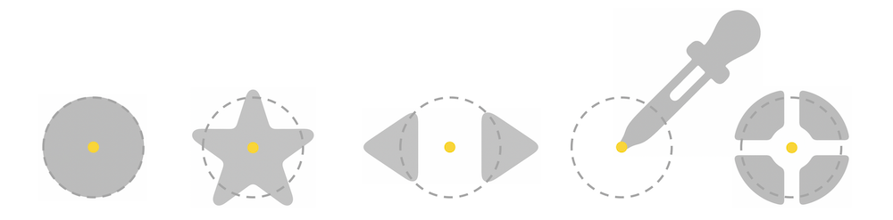
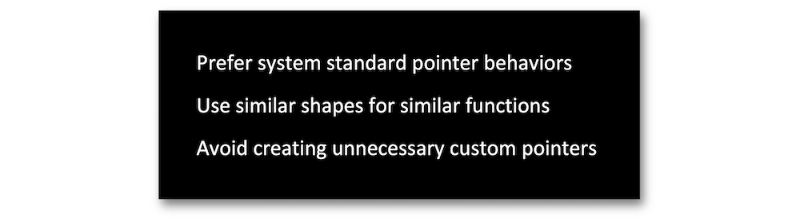
Pointer interactions #
Selection #
Using pointers give rise to a better precision in the possible actions already available and it's highly recommended that new features not be introduced only for pointers.
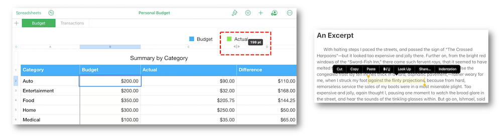
Moreover, the adaptive precision of the pointer enhances the low-precision input of some larger interfaces.
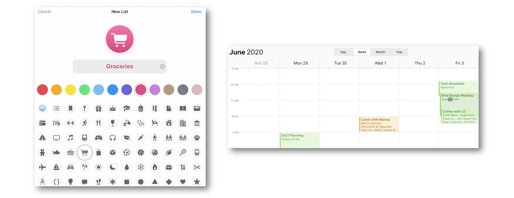
Hovering a certain area may also provide possible actions the user might want to execute in order to speed up interaction.
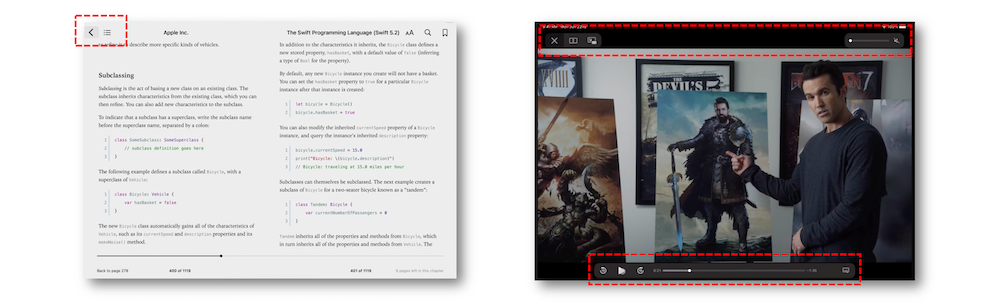
Gestures #
Customizing a two-finger gesture is an excellent way to improve the user experience but it's crucial to combine the goal and manipulation thereof with the pointer location.
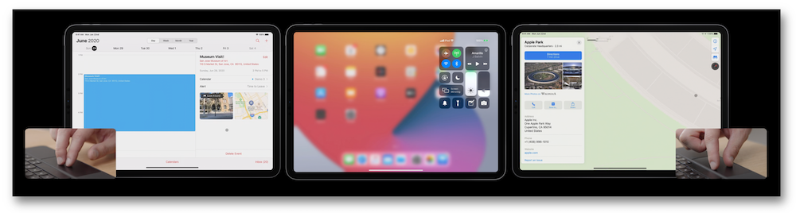
It's also essential to keep in mind the use of a secondary click that may significantly speed up the access to various functions.
Build #
The pointer coexistence with a touch-based interface comes up with numerous system components that have pointer support built in.
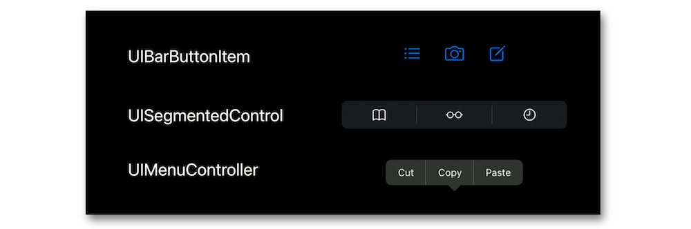
Besides some items (scroll view, collection/table view,...), many functions (drag and drop, secondary click,...) are also concerned by the pointer interactions:
Update an app #
It's definitely not necessary to modify the pointer effects if they're adapted to the users needs.
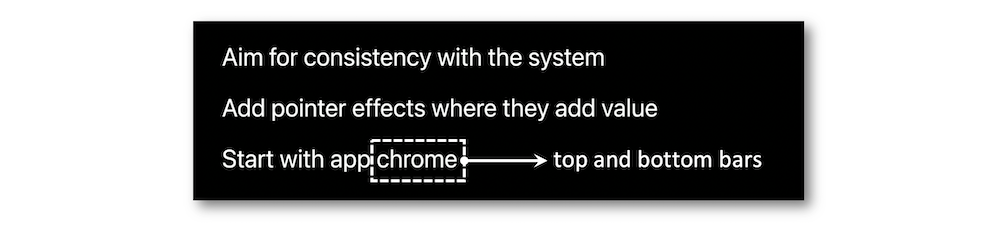
Native controls such as UIButtons have a pointer that's automatically handled by the system...
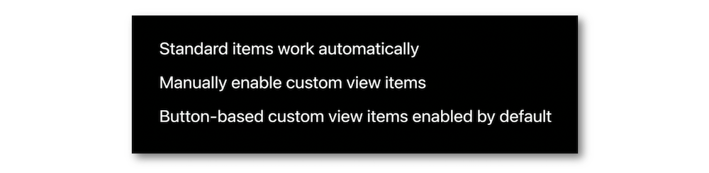
... but, regarding the custom views, it's completely up to the developper to manage the behavior thereof.
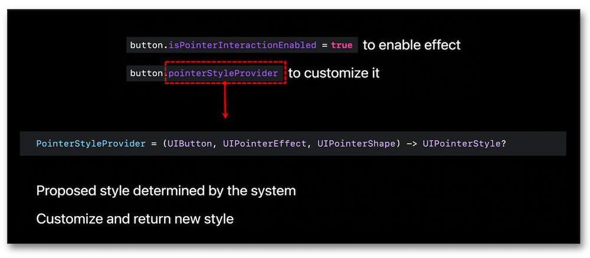
In this perspective, these modifications are based on the pointer styles divided into two categories: the content effect and the shape customization.
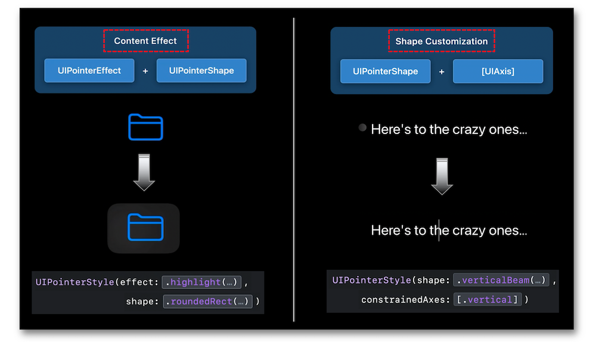
Custom UI #
When creating one's own pointer, it's vital to define the interaction areas...
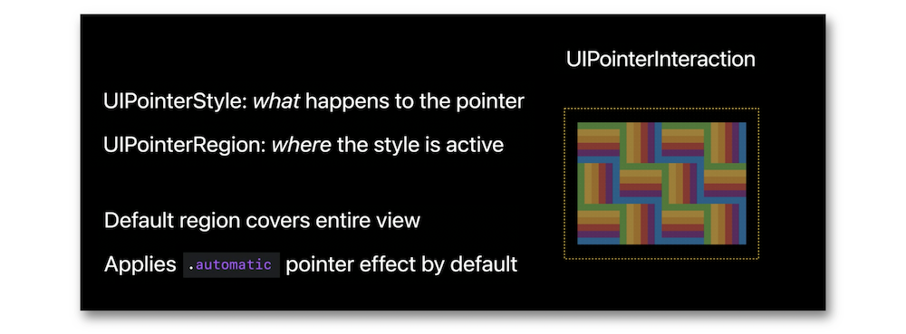
... and adapt the behavior accordingly through the delegate.
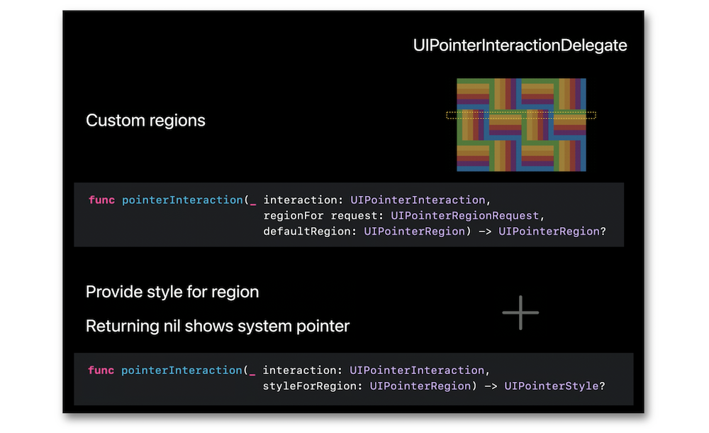
Examples #
Animations & transitions #
Providing better pointer regions may lead to a finest user experience thanks to the magnetism pointer capability.
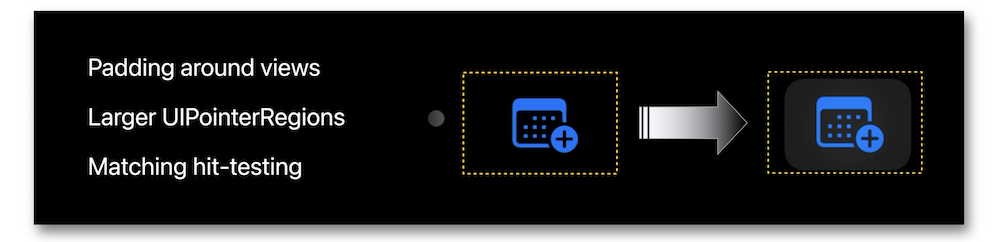
Moreover, a smooth interaction is also outlined via continuous regions between interactive elements.
Besides the continuous regions implementation previously exposed, adding coordinated animations may be an efficient way to bring some fluidity to the navigation...
... supported by the pointer interaction API that eases this realization.